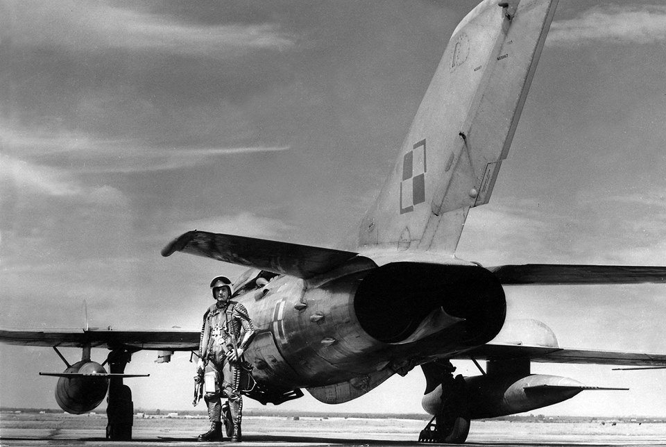
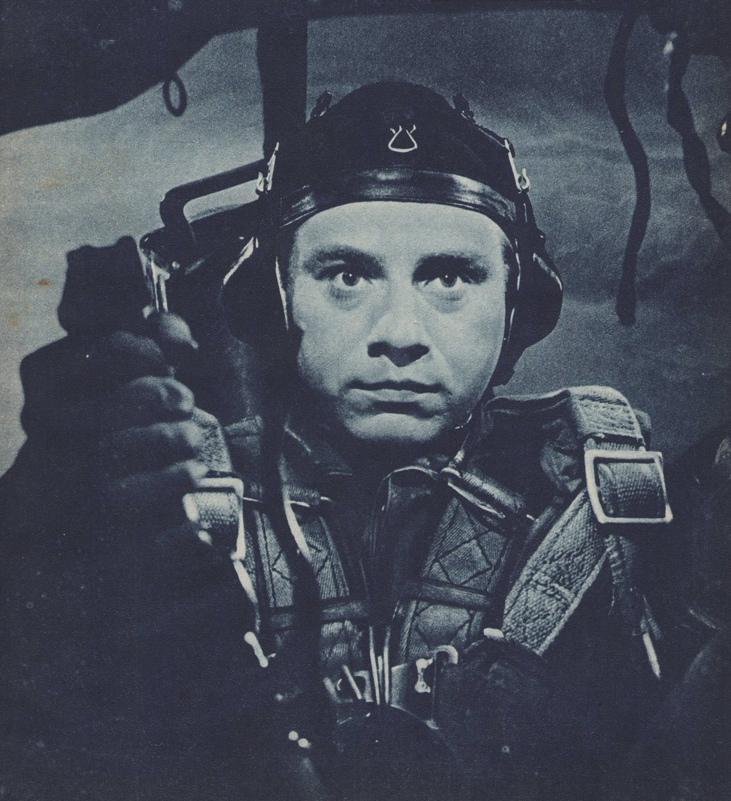
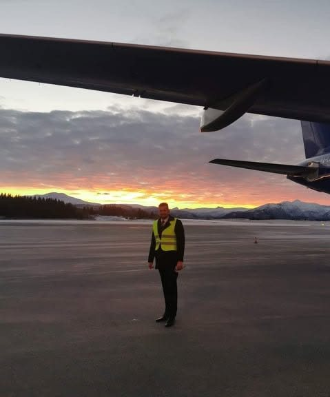
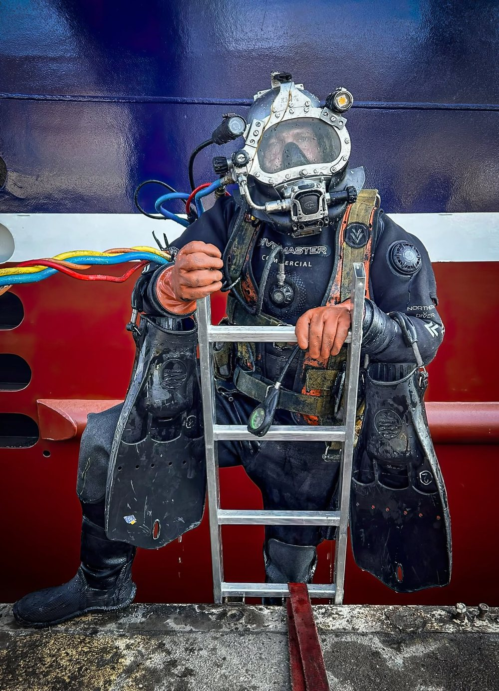

Fundacja Historii Podboju Głębin, Przestworzy i Kosmosu
im. Stefana DrzewieckiegoW głąb historii lotnictwa
Każdy obrót scrolla to metr niżej — i krok dalej w przeszłość. Schodzimy po zapomniane uniformy, sprzęt wysokościowy i wyposażenie polskich pilotów ery odrzutowców. Wydobywamy je, opisujemy i pokazujemy — tak jak nurek wydobywa to, co pochłonęła głębia.
Ratujemy historię, zanim zniknie z pamięci
Poznajemy i opisujemy historię powstania oraz użytkowania ubiorów specjalnych lotnictwa i urządzeń wysokościowych — ze szczególnym uwzględnieniem wyposażenia Wojska Polskiego z lat 1945–2000.
Wiedzę czerpiemy z wydawnictw specjalistycznych oraz ze spotkań z personelem lotniczym, technicznym i naukowym — często z ludźmi pamiętającymi czasy wczesnopowojenne. Oprócz literatury udało nam się pozyskać na własność większość wyposażenia do lotów używanego w lotnictwie powojennym; dziś uzupełniamy brakujące elementy tych zestawów.
Wyniki badań prezentujemy w postaci publikacji, wystaw i spotkań edukacyjnych. Przygotowujemy książkę o roboczym tytule „Polscy Lotnicy Wojskowi Ery Odrzutowców” — pierwszą tego typu pozycję na rynku.
Piloci myśliwców zimnej wojny
Naddźwiękowe niebo Układu Warszawskiego widziane od strony człowieka w kabinie — jego ubioru, hełmu i aparatury, dzięki której przetrwał loty na granicy fizjologii.
Ubiory kompensacyjne i przeciwprzeciążeniowe, hełmofony, maski i instalacje tlenowe — kompletowane wraz z ustaloną historią jednostek i sprzętu.

Rzeczy, które nosił człowiek w powietrzu
Skórzane hełmofony, kombinezony, uprzęże spadochronowe, gogle i maski — przedmioty codziennego użytku ludzi latających tam, gdzie technika dopiero uczyła się chronić życie.
Każdy obiekt dokumentujemy i opisujemy: skąd pochodzi, do czego służył i jak był używany. Zestawiając relacje świadków z literaturą, potrafimy odtworzyć pełny kontekst — jednostkę, epokę i człowieka.

Ten sam oddech, inny żywioł
W polskim kontekście technika morska, lotnicza i kosmiczna — jeśli chodzi o osprzęt i ubiór specjalny — są ze sobą ściśle powiązane.
Warszawskie instytuty — Lotnictwa, Techniczny Wojsk Lotniczych, Wojskowej Medycyny Lotniczej — oraz gdyńska Katedra Prac Podwodnych współpracowały przy opracowaniach sprzętu. Wiedza o gumach z lotniczych kamizelek ratunkowych i komór naciągowych ubiorów kompensacyjnych posłużyła do budowy ubiorów dla nurków; lotnicze urządzenia tlenowe trafiały do komór ciśnień, a poniemiecki inhalator Dräger stał się pierwowzorem polskiego aparatu nurkowego o obiegu zamkniętym.
Dlatego naszym patronem jest Stefan Drzewiecki — a w głąb historii lotnictwa schodzi u nas nurek.

Stefan Drzewiecki
Polski wynalazca i inżynier przełomu XIX i XX wieku, którego osiągnięcia wyprzedzały epokę. Łączył dwa żywioły, między którymi porusza się ta strona — głębinę i niebo.
Największą sławę przyniosły mu okręty podwodne: już w latach 70. XIX wieku budował łodzie napędzane siłą ludzkich mięśni, a w 1884 r. zaprezentował pierwszy na świecie okręt podwodny o napędzie elektrycznym. Równolegle prowadził pionierskie prace nad aerodynamiką i opracował teorię śmigła, która przez lata stanowiła podstawę projektowania napędów lotniczych.

Dwa żywioły, dwie pasje
Fundację historyczną im. Stefana Drzewieckiego założyliśmy w 2024 roku — z pasji do historii ubiorów i wyposażenia specjalnego. Sami poruszamy się w obu żywiołach patrona: w powietrzu i pod wodą.

Współzałożyciel fundacji, na co dzień związany z lotnictwem. Odpowiada za wątek lotniczy kolekcji i kontakt z jednostkami przechowującymi historyczne maszyny.
+48 517 019 609
Współzałożyciel fundacji i nurek zawodowy. Autor pierwszej książki o przedwojennym ubiorze lotniczym; odpowiada za wątek podwodny i badania nad sprzętem specjalnym.
+48 603 985 166Zejdź z nami głębiej
Kolekcję udostępniamy podczas umawianych pokazów oraz wystaw czasowych. Współpracujemy z muzeami, jednostkami wojskowymi, szkołami i kolekcjonerami — i chętnie rozmawiamy z osobami, które pamiętają opisywane czasy.
Napisz do nas+48 517 019 609 Współzałożyciel · żywioł wodyŁukasz Jaczun
+48 603 985 166 E-mailrafal.duch.genres@gmail.com